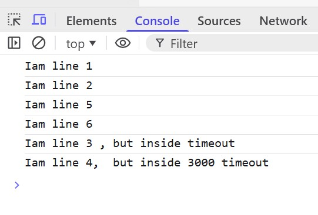

1
Technically javascript comes under frontend using react,angular,vue etc but can be operated in backend using node js or express js . Javascript is mainly seen and used through a web browser. but node js made it possible for us to use on our local system like operating it in vscode.
2
What are variables ?. there are 3 types of variables.
- var : it is not considered very effective because if i change its value in local scope, the global value also changes. which is undesirable. it can be redeclared , not let and const.
- let : the most used variable type. it understands global and local and maintains well throughout the code. and can be changed.
- const : used for declaring only n only global /permanent variables. has a fixed value. never updated. but if it holds an array or object only then it can be changed
- var has function scope. let and const has block scope./li>
3
JS is a dynamically typed language. meaning u dont need to define the datatype of variables.
4
let str1="harry"
let str2="'s code is the best"
let fullstr= str1+str2
console.log(fullstr)
5
use console.log(),prompt, alert, confirm etc in js .it will run only in browser. eg:
alert("Welcome to Indian Railways Transportation Cooperation")
console.log('Code is running')
var a = prompt("Enter your ticket number")
var isTrue = confirm("Are you sure to submit")
if (isTrue){
console.log("Redirecting to the reservation page")
}
else{
console.log("Re-enter your ticket number or book it now.")
}
6
use document.style and document.body.style.backgroundColor to set styling within js.
7
how to use objects and add values to it ? objects are complex datatypes having a key and a value pair. Unlike primitives, objects are mutable, so their contents can be changed without creating a new object. Primitives are copied by value and complex datatypes are copied by reference.eg:
let object = {
"name": "Gursimran",
"seat number": "312",
"seat type": "first-ac"
}
object.date="12th december ,Saturday"
console.log(object)
8
let a=1
for (let i = 0; i<10; i++) {
console.log(a+i);
}
// ---------------------------------------------
let o={
name: "gursimran",
age: "21",
qualification: "btech"
}
for (let key in o) {
console.log(key)
}
//---------------------------------------------------
for (const c of "object") {
console.log(c)
}
function greetings(name1,name2){
console.log("hello " + name1+" baby")
console.log("hello " + name2+" baby")
}
greetings("gursimran","rhythm")
//-----------------------------------------------------
function sum(a,b,c=4) {
return a+b+c
}
result1=sum(3,5)
console.log("The resultant is : "+ result1 )
9
const function1= (x) => {
console.log("hello "+x)
}
function1(90)
10 Arrow function and For Each
const function1= (x) => {
console.log("hello "+x)
}
function1(90)
-------------------------------------------------------
array10=[23,45,21,88,56,45,90]
array10.forEach((value,index,array)=> {
console.log(value,index,array)
});
11. alert(`This is a sample eval function: ${eval(`2 + 2`)}`)
12. note pop will pop the last element of an array that is top of the stack. whereas shift will pop the first element of the stack meaning the bottom of the stack. unshift will add an element to the beginning of the stack. push will add to the top of stack
delete will remove the element on top but does not reduce the length of the string. just places empty in palce.
13
Technically the array is mutable and strings are immutable but when u perform arr.concat(..) then contatenation operation does nothing to the orignal array.
14 Splice
splice does spliting and slicing. it returns the elements that we were deleted and at the same time it adds more elements. arr.splice(1,3,222,555). this means it will delete the element at index 1,2,3 and add 222,333 at index 1 and 2
15 USING MAP, FILTER,REDUCE. REFER TO MFR DOCUMENT. read DOM and BOM. 0$ is used when we inspect a website.
16 how to use selectors and matches,closest,contains
document.getElementById("isection").style.color="white"
document.querySelector(".box").style.backgroundColor="blue"
document.querySelectorAll(".box").forEach (e=> {e.style.backgroundColor="green"})
d=document.getElementsByTagName("div").................d[4].matches("#isection")..........d[4].closest("html")
document.querySelector("body").contains(document.querySelector(".cont"))
document.querySelector(".box").innerHTML
document.querySelector(".box").innerHTML="this is an added box"
document.querySelector(".box").outerHTML (tells us abnout that tag also)
document.querySelector(".box").innerText
document.querySelector(".box").Textonly
document.querySelector(".box").attributes
document.querySelector(".box").hasAttribute (returns boolean)
document.querySelector(".box").getAttribute("style")
document.querySelector(".box").setAttribute("style","display:flex")
document.querySelector(".box").removeAttribute("style")
document.querySelector(".box").hidden=true (hides that component.)
document.querySelector(".box").designmode="on"
document.querySelector(."container").classlist.add("bg-green")
document.querySelector(."container").classlist.remove("bg-green")
document.querySelector(."container").classlist.toggle("bg-green") ;it returns boolean
17
data attribute . use data-createdby="harry" in the inline styling (this is basically data-key:"value" pair.
how to use append method and createElement method:
let div =document.createElement("div")
div.innerhtml="i have been inserted ."
div.setAttribute("class","container2")
document.querySelector(".container").append(div)
18 Events,event bubbling,settimeinterval, settimeout,removetimeinterval
let button=document.getElementById("btn")
button.addEventListener("click",()=>
{
document.querySelector(".cheader").innerHTML="Notes Downloaded"
})
-----------------------------------------------------------
document.body.addEventListener("keyup",(e)=>{
console.log(e);
e.stopPropagation()
})
19 Event bubbling
what is event bubbling ? when u apply multiple properties to grandparent, parent and child, but interaction on child also stirs the events the meant for the parent and grandparent.this is known as event bubbling and is an undesriable behaviour. therefore we use e.stopPropagation() function.
20. SettimeInterval,clearInterval and SettimeOut
let a=setInterval(() => {
document.querySelector(".cheader").style.backgroundColor=randomcolor();
}, 1000);
clearInterval(a);
use settimeout when u want an event to take place only once after a few seconds.
21
timeout calls are always executed at last. hence js is asynchronous. console.log is synchronous.

22 CALLBACKS AND PROMISES: